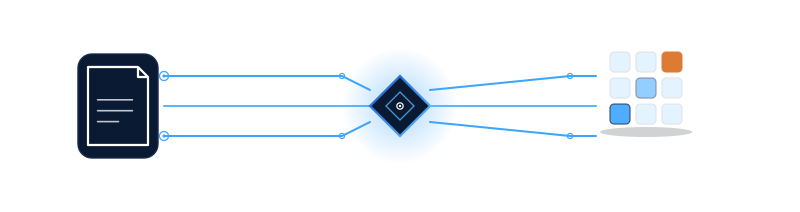
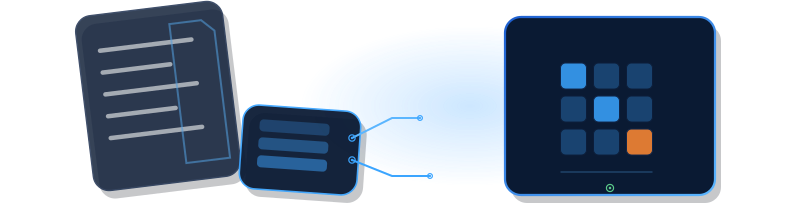
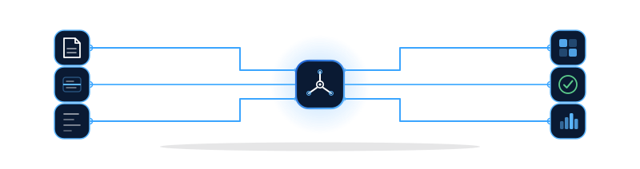

Circuits EB Premium
Composition directement inspirée des trois circuits du logo : un document PDF (grande carte, à gauche) envoie trois traces vers un noyau abstrait facetté — un losange, jamais un cercle ni un robot — qui les redistribue vers une grille de cellules Excel se peuplant progressivement. Aucun organigramme : les traces suivent la même géométrie segment + coupe à 45° que le logo, avec des points de connexion de tailles variées.

Cartes de données superposées
Trois cartes réelles, empilées et partiellement superposées de façon asymétrique — jamais alignées côte à côte. Le document source (arrière, incliné) laisse des lignes de données se détacher via un connecteur inspiré du logo vers une petite carte d'extraction, elle-même connectée à la carte de résultat Excel, la plus grande et la plus nette, au premier plan. La profondeur vient de la superposition réelle (z-order), pas d'un effet de flou.

Interface technologique minimaliste
Un seul panneau, comme un fragment d'interface produit : trois zones internes (document → reconnaissance avec ligne de balayage figée → données structurées qui se forment), séparées par de fines lignes, avec un indicateur de progression à trois points en bas. Aucun faux écran complexe, aucune icône superflue — beaucoup d'espace vide, dans l'esprit d'une capture d'écran SaaS épurée plutôt que d'un schéma technique.
Ce qui a été retenu de la référence « EB Flow — Design System », et ce qui ne l'a pas été
La référence fournie utilise sa propre palette (bleu nuit #0A1020, cyan #00E5FF…) et sa propre police (« Exo 2 »), différentes de celles du site. Consigne explicite reçue : pas de changement de police, pas de refonte de mise en page, protéger le score vitesse mobile (90/100). En conséquence :
- Conservé de la référence (principes visuels, approuvés) : connexions électroniques avec points de connexion, angles arrondis en équerre à 90° (au lieu des coupes à 45° de la Direction A), lueur/profondeur restreinte autour du noyau central, composition minimale.
- Non repris : la palette bleu nuit/cyan de la référence (le site garde exclusivement les couleurs de
tokens.css) et la police « Exo 2 » (le site garde Schibsted Grotesk / Hanken Grotesk / IBM Plex Mono). Aucun des deux n'a été mentionné comme validé. - Noyau central : la référence centre le logo carré officiel dans chaque illustration. Le brief précédent interdisait explicitement de redessiner les lettres E/B dans une illustration. Choix fait ici : un noyau abstrait à trois branches (écho des trois circuits du logo, sans texte ni lettre) plutôt que le fichier logo lui-même — à corriger facilement si un logo littéral est préféré.
- Bibliothèque de composants : carte stat/KPI avec sparkline et rangée de tuiles d'icônes de catégories ajoutées ci-dessous (nouveauté réelle, absente de la bibliothèque existante) ; le stepper et la coche de validation existent déjà (
eb_status_step(),eb_icon('validation')) et ne sont pas reconstruits. - Contrastes : tous les éléments neufs restent au-dessus de 4,5:1 (texte/valeurs) et 3:1 (icônes/traits) sur leurs deux fonds d'usage — voir les relevés sous chaque bloc.
Inspirée de la référence — noyau central, 3 entrées, 3 sorties
Structure directement adaptée de la section « Illustrations maîtresses » de la référence : un noyau central (angles arrondis, lueur discrète) relié à trois tuiles d'entrée (document PDF, reconnaissance OCR, données brutes) et trois tuiles de sortie (grille Excel structurée, validation, tableau de bord), par des connecteurs en équerre à 90° avec points de connexion — au lieu des traces à coupe 45° de la Direction A. Chaque tuile porte son propre fond bleu nuit (autoportante sur tout arrière-plan).

Deux composants réutilisables issus de la référence (section 5)
Le stepper (eb_status_step()) et la coche de validation (eb_icon('validation')) existent déjà dans functions.php et ne sont pas reconstruits ici. Les deux composants ci-dessous sont réellement nouveaux : une rangée de tuiles d'icônes de catégories (même langage visuel que les tuiles de la Direction D, réutilisable pour toute liste d'intégrations/catégories) et une carte stat/KPI avec sparkline (chiffre réel plausible pour EB Automatisation, pas la maquette « chiffre d'affaires » de la référence).
Pourquoi ces illustrations restent lisibles sur n'importe quel fond
Chaque illustration est autoportante : les éléments clairs (document, cartes) reposent sur leur propre fond bleu nuit plutôt que sur un simple contour, exactement comme le logo officiel n'est jamais un dessin flottant mais toujours posé sur son propre carré bleu nuit. Ce choix a été fait après un bug réel détecté en cours de route : un document en contour blanc seul, sans fond, devient invisible sur une page blanche (visible sur la version « fond clair » de la Direction A avant correction). Alternative envisagée et écartée : variables CSS internes au SVG pilotées par prefers-color-scheme — cette media query répond au mode sombre du système, pas à la couleur de fond réelle de la carte qui accueille l'illustration, donc elle n'aurait pas résolu le cas concret (illustration sur fond clair alors que le système est en mode sombre, ou l'inverse).